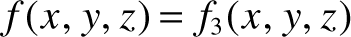
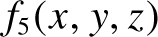
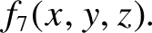
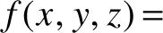
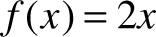
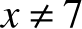
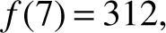

By logic we prove, by intuition we discover.
—Henri Poincaré (1854–1912)
In chapter 1 we made the following claims, without proof:
This appendix provides proofs for these claims, and shows that they are interrelated. In addition, the appendix illustrates the process by which Boolean expressions can be simplified using Boolean algebra.
The Boolean operators And, Or, and Not have useful algebraic properties. We present some of these properties briefly, noting that their proofs can be easily derived from the relevant truth tables listed in figure 1.1 of chapter 1.
These algebraic laws can be used to simplify Boolean functions. For example, consider the function Not (Not (x) And Not (x Or y)). Can we reduce it to a simpler form? Let’s try and see what we can come up with:
Boolean simplifications like the one just illustrated have significant practical implications. For example, the original Boolean expression Not (Not (x) And Not (x Or y)) can be implemented in hardware using five logic gates, whereas the simplified expression x Or y can be implemented using a single logic gate. Both expressions deliver the same functionality, but the latter is five times more efficient in terms of cost, energy, and speed of computation.
Reducing a Boolean expression into a simpler one is an art requiring experience and insight. Various reduction tools and techniques are available, but the problem remains challenging. In general, reducing a Boolean expression into its simplest form is an NP-hard problem.
Given a truth table of a Boolean function, how can we construct, or synthesize, a Boolean expression that represents this function? And, come to think of it, are we guaranteed that every Boolean function represented by a truth table can also be represented by a Boolean expression?
These questions have very satisfying answers. First, yes: every Boolean function can be represented by a Boolean expression. Moreover, there is a constructive algorithm for doing just that. To illustrate, refer to figure A1.1, and focus on its leftmost four columns. These columns specify a truth table definition of some three-variable function f(x,y,z). Our goal is to synthesize from these data a Boolean expression that represents this function.
Figure A1.1 Synthesizing a Boolean function from a truth table (example).
We’ll describe the synthesis algorithm by following its steps in this particular example. We start by focusing only on the truth table’s rows in which the function’s value is 1. In the function shown in figure A1.1, this happens in rows 3, 5, and 7. For each such row i, we define a Boolean function fi that returns 0 for all the variable values except for the variable values in row i, for which the function returns 1. The truth table in figure A1.1 yields three such functions, whose truth table definitions are listed in the three rightmost columns in the table. Each of these functions fi can be represented by a conjunction (And-ing) of three terms, one term for each variable x, y, and z, each being either the variable or its negation, depending on whether the value of this variable is 1 or 0 in row i. This construction yields the three functions f3, f5, and f7, listed at the bottom of the table. Since these functions describe the only cases in which the Boolean function f evaluates to 1, we conclude that f can be represented by the Boolean expression  Or  Or  Spelling it out: (Not (x) And y And Not (z)) Or (x And Not (y) And Not (z)) Or (x And y And Not (z)).
Avoiding tedious formality, this example suggests that any Boolean function can be systematically represented by a Boolean expression that has a very specific structure: it is the disjunction (Or-ing) of all the conjunctive (And-ing) functions fi whose construction was just described. This expression, which is the Boolean version of a sum of products, is sometimes referred to as the function’s disjunctive normal form (DNF).
Note that if the function has many variables, and thus the truth table has exponentially many rows, the resulting DNF may be long and cumbersome. At this point, Boolean algebra and various reduction techniques can help transform the expression into a more efficient and workable representation.
As our Nand to Tetris title suggests, every computer can be built using nothing more than Nand gates. There are two ways to support this claim. One is to actually build a computer from Nand gates only, which is exactly what we do in part I of the book. Another way is to provide a formal proof, which is what we’ll do next.
Lemma 1: Any Boolean function can be represented by a Boolean expression containing only And, Or, and Not operators.
Proof: Any Boolean function can be used to generate a corresponding truth table. And, as we’ve just shown, any truth table can be used for synthesizing a DNF, which is an Or-ing of And-ings of variables and their negations. It follows that any Boolean function can be represented by a Boolean expression containing only And, Or, and And operators.
In order to appreciate the significance of this result, consider the infinite number of functions that can be defined over integer numbers (rather than binary numbers). It would have been nice if every such function could be represented by an algebraic expression involving only addition, multiplication, and negation. As it turns out, the vast majority of integer functions, for example,  for  and  cannot be expressed using a close algebraic form. In the world of binary numbers, though, due to the finite number of values that each variable can assume (0 or 1), we do have this attractive property that every Boolean function can be expressed using nothing more than And, Or, and Not operators. The practical implication is immense: any computer can be built from nothing more than And, Or, and Not gates.
But, can we do better than this?
Lemma 2: Any Boolean function can be represented by a Boolean expression containing only Not and And operators.
Proof: According to De Morgan law, the Or operator can be expressed using the Not and And operators. Combining this result with Lemma 1, we get the proof.
Pushing our luck further, can we do better than this?
Theorem: Any Boolean function can be represented by a Boolean expression containing only Nand operators.
Proof: An inspection of the Nand truth table (the second-to-last row in figure 1.2 in chapter 1) reveals the following two properties:
In words: If you set both the x and y variables of the Nand function to the same value (0 or 1), the function evaluates to the negation of that value.
It is easy to show that the truth tables of both sides of the equation are identical. And, we’ve just shown that Not can be expressed using Nand.
Combining these two results with Lemma 2, we get that any Boolean function can be represented by a Boolean expression containing only Nand operators.
This remarkable result, which may well be called the fundamental theorem of logic design, stipulates that computers can be built from one atom only: a logic gate that realizes the Nand function. In other words, if we have as many Nand gates as we want, we can wire them in patterns of activation that implement any given Boolean function: all we have to do is figure out the right wiring.
Indeed, most computers today are based on hardware infrastructures consisting of billions of Nand gates (or Nor gates, which have similar generative properties). In practice, though, we don’t have to limit ourselves to Nand gates only. If electrical engineers and physicists can come up with efficient and low-cost physical implementations of other elementary logic gates, we will happily use them directly as primitive building blocks. This pragmatic observation does not take away anything from the theorem’s importance.